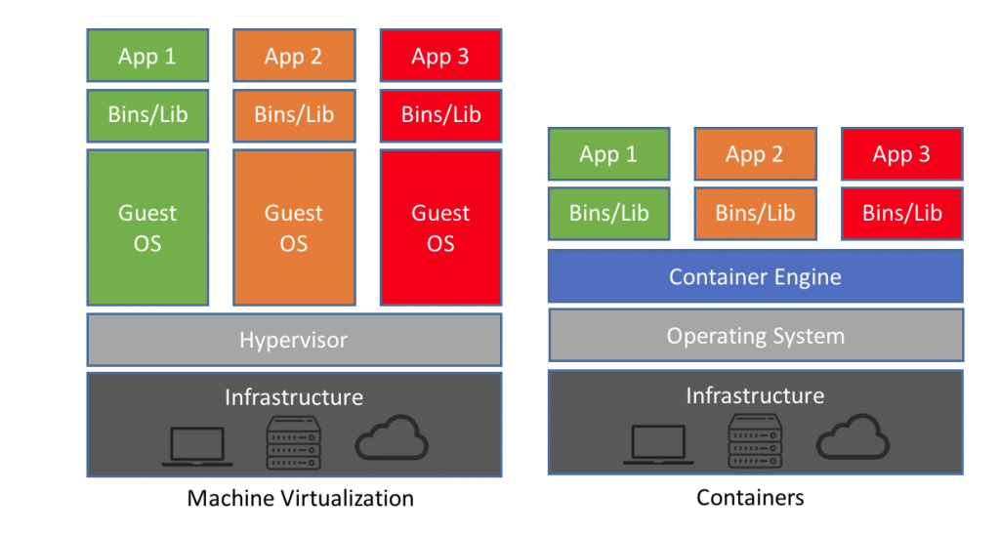

It's a service that allows developers to
"containerize" code based on a predefined "image"
It allows devs to create, deploy and run applications
with ease
Fin
But really what does all of that mean?
It's not really a docker talk without a shipping crate somewhere

Virtual Machines
Containers
You can follow along on your local if you have docker installed or go to this website - Docker Playground
*Note you will have to create a docker id first, if you haven't already
Let's run a simple container
$ docker container run busybox echo hello world
*Note you can also run the above the command without "container" but it's an older format
Unable to find image 'busybox:latest' locally
latest: Pulling from library/busybox
8c5a7da1afbc: Pull complete
Digest: sha256:cb63aa0641a885f54de20f61d152187419e8f6b159ed11a251a09d115fdff9bd
Status: Downloaded newer image for busybox:latest
hello world
Let's check all the containers on our machine
$ docker container ps -a
What happens when we run it again?
$ docker container run busybox echo hello world
hello world
*Note: if you don't specify a tag docker will default to latest
$ docker container ps -a
$ docker container rm ${CONTAINER_NAME_1} ${CONTAINER_NAME_2}
*Note: We can also use container ids but that's not great either, the best practice is to name your running containers with --name command
$ docker container run -d --name many-moon busybox sleep 500m
Now if we run a "docker container ps -a" we can see that there is a running container and it's up
*Note: the -d stands for detached mode and the typical console output will be hidden
*Note: This is good when you don't want to block your terminal
To stop it we run
$ docker container kill many-moon
That's fine and all but I can run "echo hello world" on most any servers and it'll work
What if run something like "go version"?
$ docker container run -it --name go golang:1.9.7 sh
*Note: You can also use `docker container exec -it ${RUNNING_CONTAINER_ID_OR_NAME} sh` to get inside of an already running container
But what if we want to run some go code
And it also looks like we have no editors
Let's get a coding environment setup
$ apt-get update
$ apt-get install vim
$ mkdir -p /prod/app; cd /prod/app
$ vim main.go
package main
import "fmt"
func main() {
fmt.Println("hello world")
}
$ go run main.go
# Building off a java 8 image which has java8
# pre-baked in
FROM java8:latest
# Creating a working directory in the container
WORKDIR /prod/app
# Copying all the files from the current directory
# the user is in to the working directory of the
# container (NOT A BEST PRACTICE)
COPY . .
# Running our application
CMD java -jar mytest.jar
# Building off of Debian Jessie
FROM debian:jessie
# Update Packages
RUN apt-get -qq update \
&& DEBIAN_FRONTEND=noninteractive apt-get -qq install -y --no-install-recommends python-pygments git ca-certificates asciidoc \
&& rm -rf /var/lib/apt/lists/*
# Set Hugo Envs
ENV HUGO_VERSION 0.29
ENV HUGO_BINARY hugo_${HUGO_VERSION}_Linux-64bit.deb
#Get Hugo Binaries
ADD https://github.com/gohugoio/hugo/releases/download/v${HUGO_VERSION}/${HUGO_BINARY} /tmp/hugo.deb
RUN dpkg -i /tmp/hugo.deb \
&& rm /tmp/hugo.deb
# Expose default hugo port
EXPOSE ${HUGO_PORT}
# Automatically build site
RUN mkdir /app
ADD site/ /app
WORKDIR /app
CMD hugo server -b ${HUGO_BASE_URL} -p ${HUGO_PORT} --bind=0.0.0.0
# Building off our golang image
FROM golang:1.9.7
WORKDIR /prod/app
# Don't really need this but showing stuff on build time
RUN apt-get update
RUN apt-get install vim -y
# Copy our go program
COPY main.go .
# Build our go artifact
RUN go build main.go
# Run our go program
CMD ./main
$ docker build -t go-hello .
$ docker container run --name hi-there go-hello
Pushing it up to a hub is super easy
$ docker tag go-hello ${DOCKER_ID}/go-hello
$ docker push ${DOCKER_ID}/go-hello
*Note: You'll probably need to login using "docker login" first
Let's build off another server to show port mappings
I created an image called rp4fx/go-simple-server:1.0
Sample Go Code
package main
import (
"fmt"
"net/http"
"os"
"log"
)
const (
defaultPort = "8080"
defaultName = "world"
)
func main() {
var port string
var name string
if (len(os.Args) > 1 && os.Args[1] != "") {
port = ":" + os.Args[1]
} else {
port = ":" + defaultPort
}
if (len(os.Args) > 2 && os.Args[2] != "") {
name = os.Args[2]
} else {
name = defaultName
}
fmt.Printf("Server started on port: %v with name: %v", port, name)
http.HandleFunc("/", func (w http.ResponseWriter, r *http.Request) {
fmt.Fprintf(w, "Hello, %s", name)
})
log.Fatal(http.ListenAndServe(port, nil))
}
Sample Dockerfile
# Basing off a golang image
FROM golang:1.9.7
# Create a working directory
WORKDIR /prod/app
# Copy our main directory
COPY main.go .
# Compiling to an executable
RUN go build main.go
So let's create a Dockerfile based on it
# Building off of my code
FROM rp4fx/go-simple-server:1.0
# Running our program
CMD ./main ${PORT} ${NAME}
And now let's build it and run it
$ docker build -t our-go-server .
$ docker run -d -p 9001:9000 --name my-server -e PORT=9000 -e NAME=${WHATEVER_YOUR_HEART_DESIRES} our-go-server
And now let's try and curl it and see what happens
$ curl http://localhost:9000
$ curl http://localhost:9001
There's a bunch of other tools as well
EKS (Elastic Kubernetes Service)
Plain ole' Kubernetes
Docker Swarm